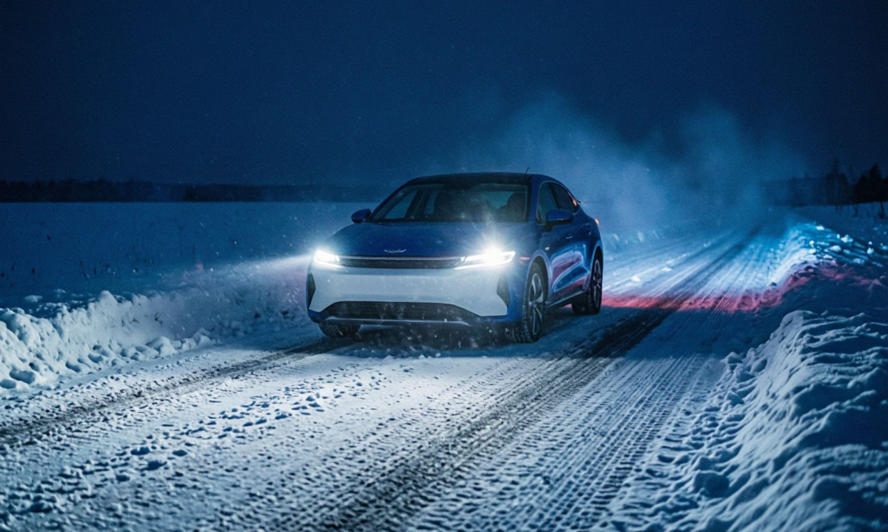

Зима — испытание для техники и навыков водителя. Большинство аварий происходит из-за переоценки возможностей летней резины или агрессивного стиля вождения.
Меняйте колеса при температуре воздуха +5°C и ниже. Летняя резина твердеет, теряет сцепление и становится «мылом». Зимняя остается мягкой.
Современным инжекторам не нужно греться 10 минут на холостых. Достаточно 30–60 секунд, чтобы масло разошлось по системе. Далее — движение на низких оборотах (до 2000 об/мин), пока стрелка температуры не сдвинется с места.
Узнайте, подходит ли индекс нагрузки ваших шин под вес автомобиля с пассажирами.
Открыть проверку шин →